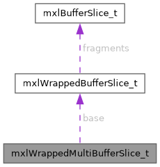

- Generated by
 1.15.0
1.15.0
|
MXL : Media eXchange Layer
MXL
|
#include <flow.h>

Public Attributes | |
| mxlWrappedBufferSlice | base |
| size_t | count |
| size_t | stride |
A helper type used to describe consecutive sequences of bytes in memory in consecutive ring buffers separated by the specified stride of bytes.
| mxlWrappedBufferSlice mxlWrappedMultiBufferSlice_t::base |
| size_t mxlWrappedMultiBufferSlice_t::count |
| size_t mxlWrappedMultiBufferSlice_t::stride |